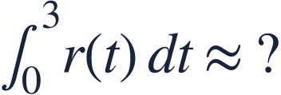
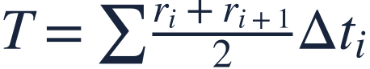

Trapezoidal approximation
사다리꼴 근사

Trapezoids join neighboring data heights and accommodate unequal interval widths.
사다리꼴은 이웃한 높이를 연결하며 구간 폭이 달라도 사용할 수 있습니다.

Trapezoids join neighboring data heights and accommodate unequal interval widths.
사다리꼴은 이웃한 높이를 연결하며 구간 폭이 달라도 사용할 수 있습니다.
Use each interval’s own width; the table intervals are not equal.
각 구간의 폭을 따로 사용하세요. 표의 시간 간격은 같지 않습니다.
| t (h) | r (L/h) |
|---|---|
| 0 | 2 |
| 1 | 4 |
| 3 | 8 |
The average of two endpoint rates gives a trapezoid’s mean height.
양 끝 변화율의 평균이 사다리꼴의 평균 높이입니다.
The first width is one hour.
첫 구간의 폭은 1시간입니다.
The second width is two hours.
두 번째 구간의 폭은 2시간입니다.
Adding rate times time produces a volume estimate.
변화율과 시간의 곱을 더하면 부피의 추정값이 됩니다.

Tabular data alone may not justify an overestimate or underestimate claim.
표만으로 과대추정 또는 과소추정이라고 단정할 수는 없습니다.
Estimate the integral by trapezoids.
사다리꼴로 정적분을 추정하세요.